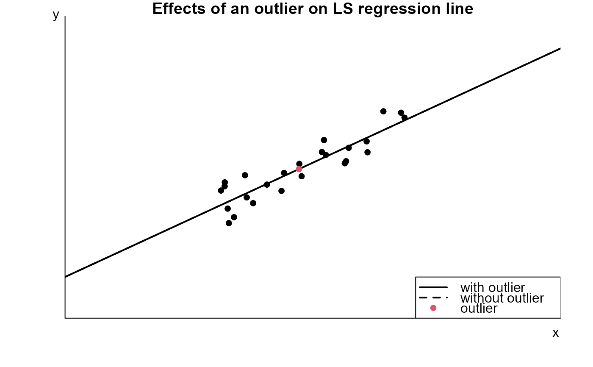

A movie to examine the influence of a single outlying observation on a least squares regression line.
lev_inf_movie(association = c("positive", "negative", "none"), n = 25)
Arguments
| association | A character scalar. Determines the type of association between (not-outlying) observations: "positive" for positive linear association; "negative" negative linear association; "none" for no association. |
|---|---|
| n | An integer scalar. The size of the sample of (non-outlying) observations. |
Value
Nothing is returned, only the animation is produced.
Details
n pairs of observations are simulated with the property
that the mean of response variable \(y\) is a linear function of the
values of the explanatory variable \(x\). These pairs of observations
are plotted using filled black circles. An extra observation is plotted
using a filled red circle. Initially this observation is placed in the
middle of the plot.
Superimposed on the plot are two least squares regression lines: one based on all the data (`with outlier') and one in which the `red' observation has been removed (`without outlier'. Initially these lines coincide.
The location of the `red' observation can be changed using the +/- buttons so that the effect of the position of this observation on the `with outlier' line can be seen.
We see that if the red observation is outlying, that is, it is far from the least squares line fitted to the other observations, then its influence on the least squares regression line depends on its x-coordinate. If its x-coordinate is much larger or smaller than the x-coordinate of the other observations (high leverage) then the influence is higher than if it has a similar x-coordinate to the other observations (low leverage). An observation with high leverage does not necessarily have high influence: if its y-coordinate falls very close to the regression line fitted to the other observations then its influence will be low.
See also
stat0002movies: general information about the movies.
Examples
lev_inf_movie()lev_inf_movie(association = "none")